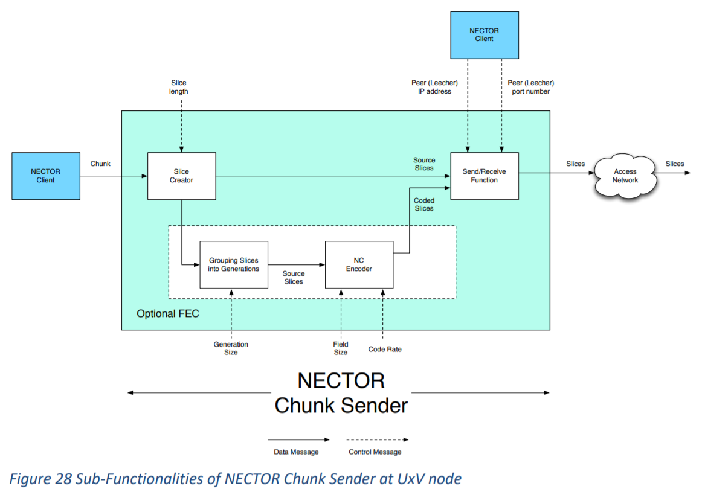

Receiving IP-sized slices of the chunk data over UDP, and
performing NC decoding if required. It sends received chunks to the NECTOR client.

Chunk receiver sub - functionalities
1 - Send/Receive Function: slices are received over UDP, send/receive function
gets inputs from NECTOR Client send/receive function
gets inputs from NECTOR Client on the PEER local IP address and PEER UDP/TCP port
numbers.
2 - NC Progressive Decoder (Optional for NC as FEC): NC as FEC at slice-level is optional.
3 - Grouping Slices into Generations (Optional for NC as FEC): The slices are re-grouped
in generations where the signaling information (generation size, slice length, etc.) are
received with slice headers.
4 - Chunk Constructor: It creates chunks from the received slices and sent them to the
NECTOR client.